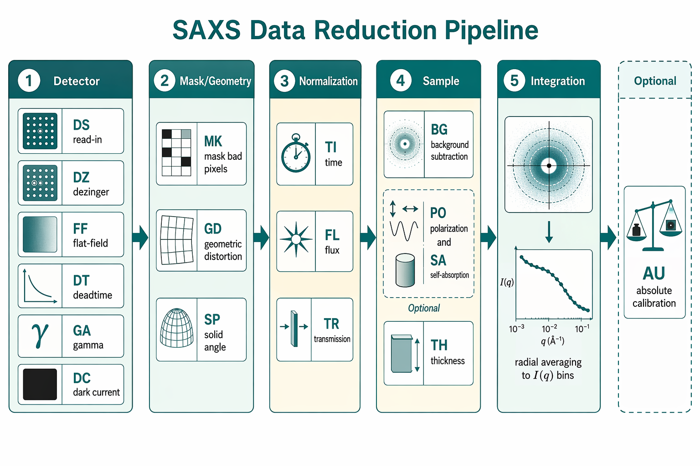
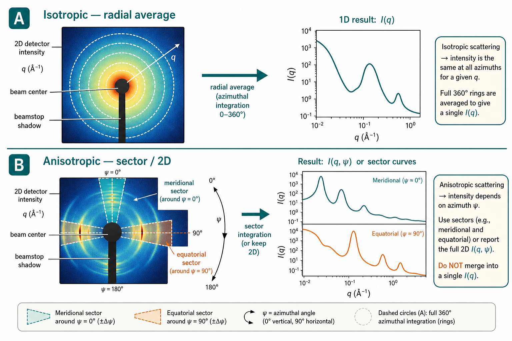

04 · 数据还原
Data reduction — from 2D detector images to corrected I(q)
导语：还原不是「可选步骤」
Pauw（2013）在综述开篇即强调：分析质量的上限由输入数据质量决定——「garbage in, garbage out」在 SAS 中尤为残酷。探测器记录的是像素计数，不是物理截面；未经系统校正的 2D 图样混入了暗电流、像素响应不均、几何畸变、空气/窗体寄生散射、样品自吸收与仪器 smearing。直接对原始图像做环向平均，得到的「$I(q)$」与第 02 章定义的 $I(q) \propto P(q)S(q)$ 没有可靠对应关系。
本章目标：理解为什么必须做 2D→1D 还原、按什么顺序施加校正、如何估计每个 $q$ 点的不确定度，以及在拟合 形式因子 或 结构因子 模型之前应完成的质控检查。绝对强度标定（cm$^{-1}$）留待第 05 章；这里聚焦「把图变成可用的 $I(q)$ 曲线」。
为什么原始 2D 图不能直接当 $I(q)$
二维探测器测量的是立体角元 $d\Omega$ 上的积分计数，而非微分截面 $d\Sigma/d\Omega$。从像素到物理量至少经过三层转换：
- 几何映射： 像素坐标 $(x,y)$ → 散射角 $2\theta$ → $q$。须已知波长 $\lambda$、样品–探测器距离 $L$、束心位置与探测器倾斜；$q$ 标定错误会系统性扭曲 Guinier 区斜率与 Porod 尾指数。
- 强度校正： 像素灵敏度（flat-field）、暗电流、死时间、非线性响应、立体角膨胀（solid angle）、偏振、透射 $T$ 与入射通量 $f_s$ 等，将「计数」变为与样品散射功率成比例的强度。
- 样品信号分离： 扣除溶剂/毛细管/空样品架本底，必要时校正样品自吸收与容器壁散射——否则低 $q$ 的 前向散射被寄生信号淹没。
数值直觉：对典型透射 SAXS，立体角校正（SP）在 $2\theta < 5°$ 时通常 $<1\%$，但 $10°$ 处可达 $\sim5\%$；偏振校正（PO）在同步辐射（$P_i \approx 0.95$）下约 $1\%$ 量级——单独可忽略，累积后足以让 $R_g$ 偏差 $5$–$10\%$。对稀生物溶液（$\Delta\rho \sim 10^{-6}$ Å$^{-2}$），本底未扣净时 Guinier 区可完全失真。
校正链：顺序与逻辑
Pauw 将还原步骤编为模块化「工具箱」（Table 1），顺序因探测器类型而异，但逻辑原则不变：先修正探测器失真，再归一化实验条件，再分离样品信号，最后积分降维。下表给出针孔透射 SAXS 的标准顺序（缩写来自 Pauw 2013）；各向同性稀溶液为默认场景。
| 阶段 | 步骤（缩写） | 做什么 | 典型必要性 |
|---|---|---|---|
| 探测器 | DS | 原始数据读入（字节序、位深、厂商格式） | 全部 |
| DZ | 去宇宙线 zinger（多帧差分） | CCD 必须；计数型 PAD 通常可略 | |
| FF | 平场校正（像素灵敏度矩阵 $F_j$） | CCD/线探测器；IP 可略；PAD 建议做 | |
| DT | 死时间校正 | 气体线探测器；PAD 高计数率时 | |
| GA | 非线性（$\gamma$）校正 | IP、部分 CCD；PAD 通常线性 | |
| DC | 暗电流 / 自然本底扣除 | 全部（暗场须与曝光时间匹配） | |
| 掩膜 | MK | 屏蔽坏点、束阻阴影、无效像素 | 全部 |
| 几何 | GD | 探测器几何畸变（查找表） | CCD/线探测器；直接探测 PAD 通常无 |
| SP | 立体角膨胀校正（$I_j \propto L_P^3/L_0^3$） | 大角或倾斜探测器时 | |
| 归一化 | TI | 按曝光时间 $t_s$ 归一 | 全部 |
| FL | 按入射通量 $f_s$ 归一 | 通量波动时（同步辐射必备） | |
| TR | 按样品透射 $T_r$ 归一（$I_j / T_r f_s$） | 全部（$T_r = I_d/I_0$ 或半透束阻法） | |
| 样品 | BG | 本底扣除（$I_j - I_{j,\mathrm{b}}$，本底须走同一校正链） | 全部 |
| 可选 | PO / SA | 偏振、样品自吸收 | 同步辐射 / 厚吸收样品 |
| TH | 按样品厚度 $d_s$ 归一 | 块体、薄膜（溶液常并入 $T_r$） | |
| 积分 | — | 环向（或扇形）平均 → $I(q)$ bins | 各向同性样品 |
| 绝对 | AU | 标定至 $d\Sigma/d\Omega$（cm$^{-1}$ sr$^{-1}$） | 定量比较、体积分数 → 第 05 章 |
Pauw 区分三档复杂度：最小集（TI + TR + TH + BG，强散射、低吸收、稳定源）、标准集（上表大部分步骤，覆盖弱散射与不完美探测器）、高级集（毛细管三明治：分壁散射、方向依赖吸收——Brûlet 等）。多数用户落在标准集。

顺序陷阱： 本底（BG）必须在透射/通量归一之后、积分之前，且本底测量本身须完整走过 DS→DC→FF→TI→FL→TR 等步骤——「样品扣了透射、本底没扣」是常见低级错误。掩膜（MK）宜在积分前完成，避免束阻像素污染环向平均。绝对标定（AU）通常放在积分之后（对 1D 曲线标定因子），但标样测量须与样品同一管线。
掩膜（MK）：束阻、坏点与无效像素
Pauw §3.3.8 指出：除束阻（beamstop）及其支架阴影外，任何「钉死」在最大/最小值或响应异常的像素都须列入掩膜。常用做法是测一张强散射样品的 2D 图，手工或半自动生成布尔掩膜（或像素索引列表），积分时跳过这些像素——掩膜本身不改变不确定度，但可避免单个坏点把整环平均值拉高数个 $\sigma$。
实践要点：束阻边缘外至少留 3–5 像素安全距（视点扩散函数而定）；同步辐射高计数时 zinger 掩膜与 MK 常合并维护；GISAXS / 取向样品除束阻外还须掩掉直射束轨、样品架杆件等固定伪影。掩膜文件应随几何配置版本化——改相机长度或探测器位置后，旧掩膜可能把有效低 $q$ 区误屏蔽。
暗电流（DC）与平场（FF）
暗电流： Pauw §3.3.6 将探测器暗电流与自然本底辐射合并处理：无 X 射线时仍有信号，来源包括 CCD 读出噪声、PMT 漏电流、IP 自辐照等。暗场须用与样品相同曝光时间采集；短曝光时可多帧平均以提高统计。部分探测器还有通量依赖的暗电流分量 $D_c$，须在测量中一并标定。Dreiss（2006）在台式机上发现：对纯水标定，暗电流与溶剂散射同量级，不可忽略。
平场： 像素间灵敏度差异可达 $\sim 15\%$（Pauw §3.3.3）。校正公式 $I_{j,\mathrm{cor}} = I_j / F_j$（$F_j$ 可归一化到 1）。平场图须在与实验相同能量下采集；实验室常用放射性源、散射箔或厂商出厂矩阵，但能量不匹配会引入环状伪影。IP 通常可略 FF；直接探测 PAD 虽像素均匀，高剂量后仍建议周期性复测。
| 校正项 | 典型量级（忽视时） | 失效症状 | 复测触发条件 |
|---|---|---|---|
| DC | 低 $q$ 抬高 1–10×（弱散射样） | 空样/暗场有「信号」；本底扣不净 | 改曝光时间、温湿度、探测器老化 |
| FF | 环向条纹、径向振荡 5–15% | 2D 图同心环伪影；平场后仍不消失→查能量 | 换 $\lambda$、换探测器、维修后 |
| MK | 单像素可污染整 bin | 环平均出现尖峰；与方位角无关的放射线 | 换束阻、坏点增多、几何变更 |
| DZ（宇宙线） | CCD 单帧尖刺 | 积分后 $q$ 方向孤立尖峰 | 每次测量多帧差分 |
透射（TR）与通量（FL）
Pauw §3.4.2 给出三种透射测量路径：
- 在线离子室（同步辐射）： 样品前后各一只，$T_r = (I_d/I_u)_\mathrm{sample} / (I_d/I_u)_\mathrm{empty}$，可逐帧监测通量漂移。
- 半透束阻 / 束阻 PIN 二极管： 主束一小部分打到探测器或专用二极管，台式机常用。
- 玻璃碳发散法（Dreiss 2006）： 样品后方放置已知 $T$ 的强散射体，比较有无样品时探测器上积分计数——Bruker NanoStar 等密封管仪器的标准做法，$T_r$ 重复性约 3%。
透射与通量归一将强度变为「每入射光子、每未吸收路径」的散射功率：$I_j \leftarrow I_j / (T_r f_s)$。$T_r$ 误差 3% 直接传递为强度 3% 误差；厚样（$T_r < 0.7$）还须考虑路径依赖的吸收校正（SA，Pauw §3.4.7）。同步辐射时间分辨实验须用 $f_s(t)$ 而非单次平均值——样品沉降或气泡会导致 $T_r(t)$ 突变，是数据作废的早期信号。
本底与透射：决策表
| 场景 | 本底应包含 | 透射测量 | 常见失误 |
|---|---|---|---|
| 生物稀溶液（毛细管） | 同规格毛细管 + 匹配缓冲液 | 每次样品；在线离子室或半透束阻 | 缓冲液离子强度/pH 与样品不一致 |
| 聚合物块体 | 空样品架或同质基体 | $T_r < 0.9$ 时须自吸收校正 | 忽略容器壁散射 |
| SANS（H/D 匹配） | 氘代溶剂本底；空泡本底 | $T_r$；多距离各段分别归一 | $^1$H 不相干本底未扣净 |
| 同步辐射时间分辨 | 同流速/同池体空跑 | 逐帧 $f_s(t)$、$T_r(t)$ | 只用平均透射，忽略样品沉降 |
本底与样品曝光时间通常应相同，以保证 Poisson 统计可比；样品/本底计数比很大时，可延长样品曝光、缩短本底曝光，但须在还原中按时间比缩放本底（Pauw 引用 Ruland 等）。
环向积分：各向同性 vs 各向异性
对各向同性样品（稀溶液、粉末、各向同性凝胶），将相同 $q$、不同方位角 $\psi$ 的像素分组平均，2D→1D：
$$ I_{\mathrm{qbin}}(\bar{q}) = \langle I_j(q \in [q_n, q_{n+1}]) \rangle $$其中 $\bar{q}$ 为 bin 内 $q$ 的均值。这是稀溶液 SAS 的标准操作——$I(q)$ 直接对应 $P(q)S(q)$（在已知 衬度 $\Delta\rho$ 下）。
对各向异性样品（取向纤维、液晶、拉伸聚合物、GISAXS 面内条纹），须保留 $(q,\psi)$ 二维信息：按 $(q,\psi)$ 分箱得 $I(q,\psi)$，或取特定扇区积分（如 meridional / equatorial）。对取向样品做全环平均会抹平取向差异，把各向异性 $P(q)$ 混成无物理意义的 1D 曲线。

| 判断维度 | 用环向平均（→ $I(q)$） | 保留 2D / 扇区 |
|---|---|---|
| 2D 图样对称性 | 以束心为心的同心圆纹 | 椭圆、双叶、Bragg 弧、四重对称 |
| 样品类型 | 稀溶液、单分散球、各向同性凝胶 | 纤维、薄膜面内有序、流动场取向 |
| 拟合目标 | $R_g$、$P(q)$、$S(q)$ 标量参数 | 取向分布、晶格参数、$P(q)$ 各向异性 |
| 软件 | ATSAS、SasView、Irena 1D 管线 | 2D 拟合（McSAS、SASfit 2D、GISAXS 专用） |
bin 间距选择： 低 $q$ 常用对数分箱（更多点覆盖 Guinier 区）；高 $q$ 可用线性或自适应（尖锐峰/features 处加密，Ilavsky 2012）。bin 过宽会抹平 $P(q)$ 振荡；过窄则每 bin 像素数 $N$ 太少、统计噪声大。
扇区积分细节： 取向纤维常取 meridional（$\psi \parallel$ 拉伸轴）与 equatorial 两扇区，半角宽 5°–15° 须报告；各扇区像素数 $N_\psi$ 不同时 $\sigma$ 须分扇区计算。GISAXS 面内条纹按 $q_x$、$q_z$ 分箱，不可与透射 SAS 环平均混用。Pauw 指出：各向异性样品亦可做 $(q,\psi)$ 二维分箱降采样，而非强行 1D。
相对强度 $I(q)$：绝对化之前的状态
完成 TI + TR + BG + 积分后，纵轴通常是相对散射强度——已校正探测器失真、归一化曝光/通量/透射、扣除本底，但尚未乘以标定因子 CF。此时：
- 可以做： Guinier 求 $R_g$（斜率与绝对尺度无关）、形状趋势比较、同仪器同流程下的浓度系列、$q$ 峰位分析。
- 不能做： 报告 $\mathrm{cm}^{-1}$ 的 $I(0)$、分子量、体积分数、Porod 比表面积——须第 05 章 AU 步骤。
- 单位： 常见为 counts s$^{-1}$、归一化任意单位，或软件特定的「per transmission per second」；发表时须注明还原管线与是否绝对标定。
Pauw 强调：相对 $I(q)$ 的质量上限仍由校正链完整性决定——绝对标定不能修复本底错误或未除透射。Cookson（2006）在同步辐射针孔相机上通过多曝光拼接与介孔 silica 二次归一，把 CCD 有限动态范围扩展到全 $q$ 窗——弱散射生物样品在实验室机上同样需要「长曝光 + 短曝光」或半透明掩膜策略，否则低 $q$ 饱和与高 $q$ 噪声地板无法同时满足。
- 曲线已除以 $T_r$、$t_s$，本底按 $I_\mathrm{sample} - I_\mathrm{bg}$ 扣除且 bg 走同一管线。
- 每个 $q$ 点有 $\sigma(q)$；低 $q$ 点 $I/\sigma \gtrsim 10$（拟合前建议 $\gtrsim 50$）。
- 元数据含 $\lambda$、$L$、像素尺寸、掩膜/平场版本——供第 05 章标样同配置复测。
不确定度：$q$-bin 误差与 Pauw 勘误
没有可靠 $\sigma(q)$，加权最小二乘拟合与 $\chi^2$ 检验均无效。还原链每一步应传播相对不确定度 $\sigma_r$ 与绝对不确定度 $\sigma_a$（Pauw §3.1）。
环向积分后，每个 $q$-bin 的不确定度取两者较大值：
$$ \sigma_{r,\mathrm{qbin}} = \max\left\{\underbrace{\frac{1}{N}\sqrt{\sum_{j}\sigma_{r,j}^2}}_{\text{传播误差}},\;\underbrace{\frac{1}{\sqrt{N}}\sqrt{\frac{1}{N-1}\sum_{j}(I_j - I_{\mathrm{qbin}})^2}}_{\text{均值的标准误 SEM}}\right\} $$其中 $N = N_{\mathrm{qbin}}$ 为 bin 内像素数，$j$ 遍历 bin 内所有有效像素。
此外，Pauw 建议可将相对不确定度下限设为强度的 $1\%$——即便校正再精细，系统误差很难低于此（Hura et al. 2000）。Poisson 计数统计下 $\sigma_r \approx 1/\sqrt{I_j}$；死时间校正须用原始计数估计 Poisson 误差，而非校正后计数（Laundy & Collins）。
背景扣除后不确定度：
$$ \sigma_{r,\mathrm{cor}} = \sqrt{\sigma_{r,\mathrm{sample}}^2 + \sigma_{r,\mathrm{background}}^2} $$数值直觉：Guinier 区若要求 $R_g$ 精度 $\pm 5\%$，相对强度误差应 $\lesssim 2\%$——即 $I/\sigma \gtrsim 50$。高 $q$ Porod 尾计数稀少时，$\sigma/I$ 可达 $30$–$50\%$，此时不应强行拟合 Porod 指数。
误差传播算例
设某 $q$-bin 内 $N=200$ 像素，积分后 $I_{\mathrm{qbin}} = 1.00\times 10^{-3}$（任意单位），像素间样本 SD $= 2.0\times 10^{-4}$：
- 传播项：$\frac{1}{N}\sqrt{\sum \sigma_{r,j}^2}$ — 若各像素 Poisson $\sigma_{r,j} \approx 1/\sqrt{I_j}$，典型 $\sim 3\times 10^{-5}$。
- SEM 项：$\mathrm{SD}/\sqrt{N} = 2.0\times 10^{-4}/\sqrt{200} \approx 1.4\times 10^{-5}$。
- 取 $\max\{\cdot\}$ 并设 1% 下限：$\sigma_r = \max(3\times 10^{-5},\, 1.4\times 10^{-5},\, 10^{-5}) \approx 3\times 10^{-5}$（$\sigma/I \approx 3\%$）。
本底扣除：样品 $\sigma_r = 3\%$，本底 $\sigma_r = 5\%$，则 $\sigma_{r,\mathrm{cor}} = \sqrt{0.03^2 + 0.05^2} \approx 5.8\%$——本底质量常是低 $q$ 不确定度的瓶颈。若误用 SD 而非 SEM（Pauw 勘误前的式 35），会得到 $\sigma_r \approx 20\%$，$\chi^2$ 拟合会系统性拒绝合理模型。
多步传播（Pauw §3.1）：除法 $I_j / T_r$ 时 $\sigma_r(I/T) \approx \sqrt{\sigma_r(I)^2 + \sigma_r(T)^2}$；本底减法用平方和。建议保存每步 $\sigma_r$ 与 $\sigma_a$，便于追溯。
拟合前检查清单
综合 Pauw 附录 A.1 与第 03 章仪器要点，在将 $I(q)$ 送入 Guinier、IFT 或 $P(q)$ 拟合之前，逐项确认：
- $\lambda$、$L$、束心像素、探测器倾斜/旋转已记录；改几何后 $q$ 标定已重做（银二十二酸等）。
- 像素尺寸、掩膜文件、平场/暗场版本号与测量日期可查。
- 透射 $T_r$、曝光 $t_s$、（块体）厚度 $d_s$、入射通量 $f_s$ 与样品同帧存储。
- 每个样品配置有匹配本底（同毛细管/同溶剂/同光路）；几何或溶剂变更后本底已重测。
- 样品至少 2–3 次重复或子曝光，检查辐射损伤、沉降、气泡。
- 透射在测量过程中稳定（在线监测无突变 → 样品未动、未析出的直觉检查）。
- CCD 用户：暗场曝光时间与样品一致；多帧用于 zinger 剔除。
- log-log 图上 Guinier 区无异常上翘（本底/束阻/寄生散射）；$q_{\min}$ 距束阻阴影足够远。
- 高 $q$ 区 $\sigma/I$ 过大处已标记截断，不用于 Porod 分析。
- 各向同性假设：2D 残余图（$I_{\mathrm{2D}} - I_{\mathrm{model}}(q)$）无方位角调制。
- 误差栏非零、非恒定百分比占位符；低 $q$ 点 $\sigma$ 反映 SEM 缩小而非虚假零。
- （若浓溶液）$S(q)$ 效应：低 $q$ 偏离 Guinier 线性——须显式模型或稀释验证，不可硬套稀溶液 $P(q)$。
常见失效模式
| 失效模式 | 典型原因 | 如何判断 | 应对 |
|---|---|---|---|
| Guinier 区上翘、$R_g$ 偏大 | 本底不足、寄生散射、溶剂不匹配 | 低 $q$ 偏离线性；空毛细管在同 $q$ 有信号；$I_{\mathrm{buf}}(q_{\min})/I_0 > 10^{-4}$ | 重测匹配本底；检查真空/狭缝寄生；USAXS 延伸 $q_{\min}$ |
| 高 $q$ 平台或振荡 | 平场错误、坏点未掩、zingers | 2D 图有放射状条纹；平场后仍见环状伪影 | 重采平场；多帧 zinger 掩膜；检查 FF 能量是否匹配 |
| 全曲线按比例偏移 | 透射/通量未归一、曝光时间未除 | 重复测量强度随 $t_s$ 线性缩放；$T_r$ 未写入头文件 | 补做 TR、TI、FL；核对还原日志 |
| Porod 尾变平、$\chi^2$ 高 $q$ 爆炸 | 本底过度扣除、$q$ 标定漂移、smearing | Porod 图非线性；Kratky 数据用理想 $P(q)$ 拟合 | 检查 BG 缩放；重标 $q$；对模型做 smearing 卷积 |
| 重叠 $q$ 区台阶（SANS 多距离） | 各段分辨率/归一不一致 | merge 区 $>5\%$ 偏离；非物理振荡 | 逐段检查 $T_r$、$\Delta\lambda/\lambda$；按 $1/\sigma^2$ 加权过渡 |
| 误差栏过大/过小 | 误用 SD 而非 SEM；占位 $\sigma=0$ | SEM 修复后 $\chi^2$ 从 $\ll 1$ 变合理；或拟合无视高 $q$ 散点 | 按勘误公式重算；设 $1\%$ 相对下限 |
| 取向信息丢失 | 各向异性样品环平均 | 2D 图有条纹/双叶，1D 曲线平滑无特征 | 改扇区或 2D 分析；勿与各向同性模型比较 |
| 低 $q$ 截断 | 束阻过大、$L$ 过短 | 最低 $q$ 点邻束阻仅 2–3 像素；$I(q)$ 首点跳变 | 增大 $L$、缩小束阻、USAXS |
| 多重散射（SANS/SAXS 厚样） | $T_r < 1/e$、强散射体 | 变厚度或 $\lambda$ 曲线形状变；低 $q$ 抬高 | 减薄；模型侧 smearing；Monte Carlo 估计 |
常见坑
- 坑 2：$q$ 标定只做过一次 → 如何判断： 改 $L$ 或 $\lambda$ 后银二十二酸峰位漂移；Guinier $R_g$ 与 NMR/SEC 系统差 $>10\%$。每次几何变更须重标。
- 坑 3：盲目 desmearing → 如何判断： Kratky 数据 desmear 后高 $q$ 噪声放大、出现非物理振荡。Pauw 明确推荐对模型 smearing，而非对数据 desmearing。
- 坑 4：忽略浓度效应 → 如何判断： 稀释 2× 后低 $q$ 强度 $\neq 4\times$（$I \propto c$ 仅稀极限）；$I(0)/c$ 随浓度变。须引入 $S(q)$ 或稀释至 $S(q)\approx 1$。
- 坑 5：无误差拟合 → 如何判断： 拟合曲线穿过高 $q$ 大误差点仍 $\chi^2 \approx 1$（因未加权）。无 $\sigma$ 时只能目视，不可发表定量参数。
- 坑 6：厂商 16-bit 格式误读 → 如何判断： Rigaku 等格式强度呈 32 的奇数倍「台阶」；与物理预期差数量级。查阅 DS 步骤文档。
小结
数据还原把探测器像素计数转化为可解释的 $I(q)$：探测器失真先修，实验条件（时间、通量、透射）归一，本底分离样品信号，再按对称性选择环向或扇区积分。$q$-bin 不确定度须用传播误差与 SEM 的较大值（Pauw 勘误），并警惕无 $\sigma$ 的拟合。完成质控清单后，曲线才适合进入 Guinier/Porod、IFT 与模型拟合——绝对尺度则交第 05 章。
相关词条
- 散射矢量 q
- 衬度
- 形式因子
- 结构因子
- 前向散射
- Guinier 分析
- Porod 定律
延伸阅读
- Everything SAXS: small-angle scattering pattern collection and correction. Brian R. Pauw (2013). DOI: 10.1088/0953-8984/25/38/383201（含 2014 勘误：$q$-bin 不确定度须用 SEM）
- Effect of binning of data in small-angle scattering. Jan Ilavsky (2012). DOI: 10.1107/S0021889812004037（Nika 2D 还原与分箱）
- Strategies for data collection and calibration with a pinhole-geometry SAXS instrument on a synchrotron beamline. David Cookson et al. (2006). DOI: 10.1107/S0909049506030184（多曝光动态范围、在线 $I_0$/$I_t$ 监测）
- Instrumentation for Small-Angle Scattering. Jan Skov Pedersen (1995). DOI: 10.1007/978-94-015-8457-9_2